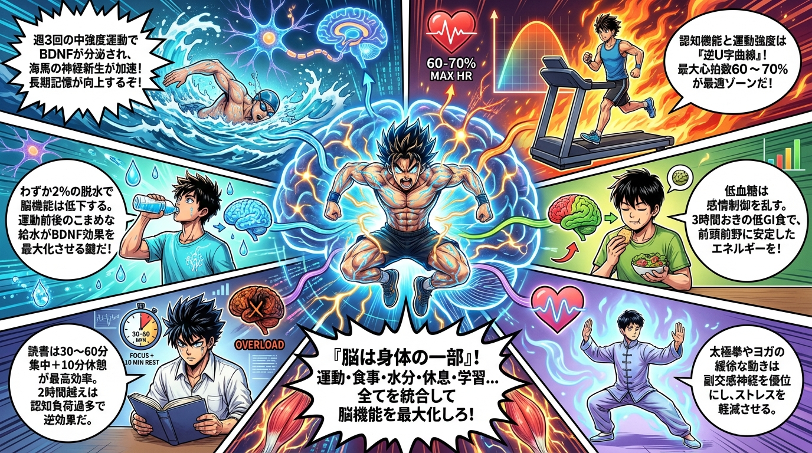
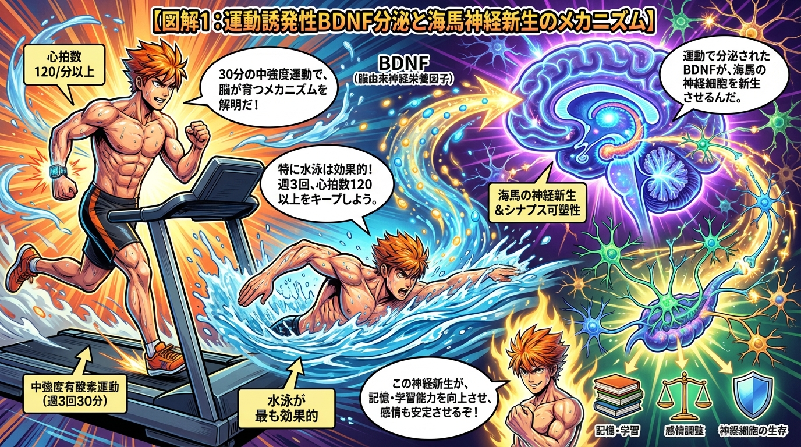
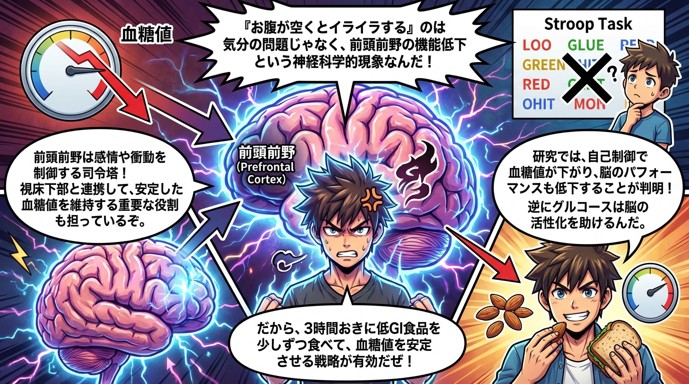
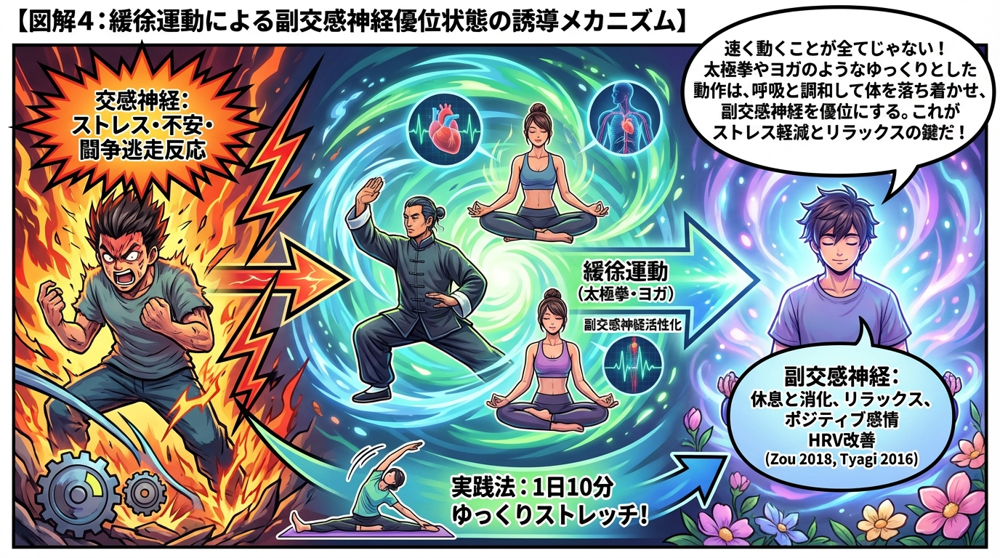
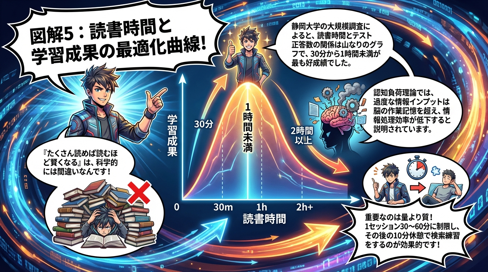
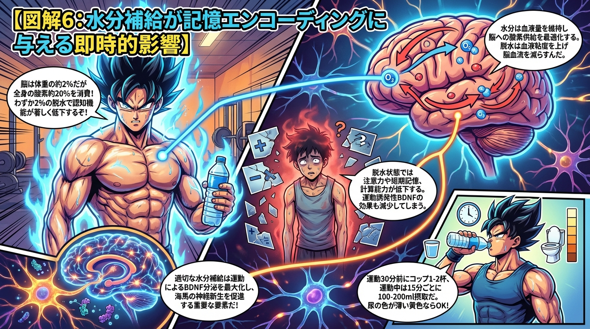

科学的に証明されたすごい習慣大百科
身体運動と認知機能の相互作用
📌 このテーマで学べること
運動が脳を物理的に変化させるメカニズムを解明。BDNF誘発性神経新生、運動強度の最適化、血糖値と感情制御、緩徐運動によるリラックス効果、読書時間の最適化、水分補給と記憶の関係を統合し、科学的に証明された6つの実践戦略を提供。
🎯 全体概要
6つのサブタイトル全体を1枚で俯瞰できる概要図です。
📋 6つのサブタイトル
- 運動誘発性BDNF分泌が海馬神経新生を促進する仕組み
- 運動強度と認知パフォーマンスの逆U字曲線理論
- 血糖値変動が感情制御システムに及ぼす神経科学的影響
- 緩徐運動による副交感神経優位状態の誘導メカニズム
- 読書時間と学習成果の最適化曲線
- 水分補給が記憶エンコーディングに与える即時的影響
📊 各セクション詳細図解
6つのサブタイトルそれぞれの詳細な図解です。

① BDNF分泌と海馬神経新生

② 運動強度の逆U字曲線

③ 血糖値と感情制御

④ 緩徐運動と副交感神経

⑤ 読書時間の最適化

⑥ 水分補給と記憶
🔬 主な研究ソース
- 2024年6月メタ分析 - 運動とアルツハイマー病モデルにおけるBDNFレベル
- 2024年fMRI研究 - 運動強度と脳結合性の逆U字型関係
- 高齢者対象研究 - 中強度運動と認知パフォーマンス
- P3電位振幅研究 - 運動強度と注意・情報処理
- 前頭前野と血糖値研究 - 自己制御と血糖値低下
- グルコース投与研究 - エピソード記憶エンコードと脳活性化
- 2018年Zouらメタ分析 - 太極拳と心拍変動性(HRV)
- 2016年TyagiとCohen研究 - ヨガとHRV増加
- 呼吸研究 - 長時間呼気呼吸と副交感神経活性化
- 静岡大学大規模調査 - 読書時間とテスト正答数(小中学生221万人)
- 認知負荷理論 - 過度な情報インプットと処理効率
- 運動前水分補給研究 - 記憶エンコーディング向上
- 脱水研究 - 2%脱水と認知機能低下
- BDNF研究 - 水分補給と運動誘発性BDNF分泌